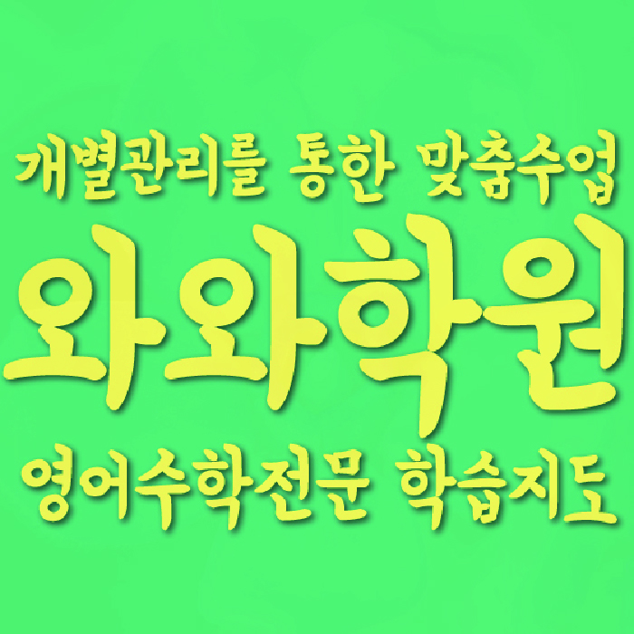

ELEMENTARY ENGLISH
비하동 초등 영어학원
비하동 초등 영어학원 선택 전 쉬운 문제 뒤의 설명 과정을 확인하는 학습, 질문·혼자 설명과 문장 읽기의 현재선, 학교 영어와 가정 복습 순서를 확인하세요.
01 Quick answer
비하동 초등 영어: 질문·혼자 설명과 문장 읽기 점검
비하동의 ‘쉬운 문제 뒤의 설명 과정을 확인하는 학습’은 진도보다 아이가 실제로 수행한 흔적과 설명 기록에서 판단합니다. 확인 자료: 어휘·문장 읽기·말하기 기록을 먼저 봅니다. ‘도움을 요청한 위치와 설명 뒤 혼자 다시 한 부분’이 나온 쪽수와 문장 읽기를 살필 날짜를 적으세요. 이번 주 행동: ‘모르는 지점에 표시하고 질문한 뒤 배운 내용을 짧게 다시 설명하기’를 직접 해 보고 도움받은 부분과 혼자 마친 부분을 나누어 표시하세요. 재확인 기준: ‘비슷한 새 활동에서 도움을 요청할 시점과 혼자 할 범위를 구분하는지’를 아이의 실제 자료로 대조하세요.
확인 기준
비하동 학습 자료에서는 질문·혼자 설명을 확인할 근거를 찾고, 다음 계획에서는 문장 읽기를 살필 날짜를 적어 이용 조건과 구분합니다.


 010-6839-8283
010-6839-8283학습 답변 요약
핵심 주제는 ‘쉬운 문제 뒤의 설명 과정을 확인하는 학습’입니다. 질문·혼자 설명과 문장 읽기의 현재선을 확인하고 학습 우선순위와 복습·과제 루틴 관련 활동·점검 기록과 학교·센터 사실을 분리해 살펴봅니다.
비하동 초등 영어: 쉬운 문제 뒤의 설명 과정을 확인하는 학습
비하동에서 초등 영어 계획을 세울 때 ‘질문·혼자 설명과 문장 읽기의 현재선’을 첫 질문으로 둡니다. ‘도움을 받은 뒤 아이가 같은 낱말이나 문장을 자기 말로 다시 설명하는지’가 실제 자료에서도 드러나는지부터 확인하세요.
‘쉬운 문제 뒤의 설명 과정을 확인하는 학습’은 결과를 약속하는 문구가 아니라 현재 기록과 다음 행동을 잇는 점검 주제입니다. 질문·혼자 설명과 문장 읽기의 자료 위치를 나누고, 이번 주 한 행동과 재확인 결과를 같은 형식으로 남기세요. ‘쉬운 문제 뒤의 설명 과정을 확인하는 학습’에 맞춘 기록은 질문·혼자 설명 자료에서 시작합니다. 멈춘 쪽과 날짜를 표시하고 행동 하나를 실행한 뒤 재확인 날 도움을 요청한 지점과 혼자 다시 한 범위를 첫 기록과 비교하세요.
진단에 필요한 질문·혼자 설명과 문장 읽기 기록
진단 자료에서는 ‘도움을 요청한 위치와 설명 뒤 혼자 다시 한 부분’과 ‘읽다가 멈춘 문장과 낱말 순서를 잘못 짚어 뜻이 달라진 위치’를 한 곳씩 표시하세요. 각 근거가 있는 자료의 위치와 날짜를 적고, 처음 확인한 상태와 도움 뒤 다시 확인한 상태를 나누어 남기세요.
질문·혼자 설명의 첫 기록을 만든 뒤 문장 읽기도 별도 자료에서 확인하세요. 두 영역의 실행일과 다시 볼 날짜를 나누어 적으면 한쪽의 어려움이 다른 쪽에 섞이지 않습니다.
질문·혼자 설명과 문장 읽기: 두 학습 자료의 확인 날짜를 구분하는 법
학교 일정이 많은 주에도 두 영역의 확인을 한쪽으로 몰지 마세요. 질문·혼자 설명과 문장 읽기 자료에 혼자 마친 범위·멈춘 위치를 남기고 다음 행동을 각각 정합니다.
비하동에서는 질문·혼자 설명을 확인할 도움을 요청한 위치·스스로 다시 설명한 기록과 문장 읽기를 확인할 문장을 읽고 멈춘 곳·설명한 내용의 기록을 다른 줄에 둡니다. ‘모르는 지점에 표시하고 질문한 뒤 배운 내용을 짧게 다시 설명하기’와 ‘짧은 문장을 의미 덩어리로 끊어 읽고 그림이나 상황과 연결해 설명하기’를 각각 해당 자료에서 짧게 실행하세요. 마지막에는 질문·혼자 설명과 문장 읽기에서 정한 활동을 마친 기록을 비교하고, 아직 도움이 필요한 쪽의 재확인일만 새로 잡으세요.
‘쉬운 문제 뒤의 설명 과정을 확인하는 학습’을 확인한 날에는 두 자료의 첫 결과와 재확인 결과를 다른 줄에 적으세요. 도움을 요청한 지점과 혼자 다시 한 범위와 새 문장의 의미 덩어리를 설명한 결과를 각각 해당 자료의 첫 기록과 대조합니다.
비하동 학교·학년·시간표와 질문·혼자 설명 자료 비교
공개 자료에 증안초·진흥초 등이 학교명으로 보이지만, 학교명보다 실제 학교 진도표와 현재 수업 가능 여부를 먼저 확인해야 합니다.
제공 자료에서 확인되는 초등 영어 가능 학년은 초3·초4·초5·초6입니다. 아이의 질문·혼자 설명 현재 상태는 최근 교재로, 센터 시간표는 최신 안내로 각각 확인하세요. 확인할 센터명은 와와학습코칭센터 복대점이고 제공 주소는 충북 청주시 흥덕구 진재로 37 3입니다. 연결된 교습비 정보와 현재 운영 시간의 기준일을 따로 확인하세요.
질문·혼자 설명과 문장 읽기를 구분해 기록하는 7일 점검
7일 계획의 출발점은 ‘도움을 요청한 위치와 설명 뒤 혼자 다시 한 부분’입니다. 첫 행동을 ‘모르는 지점에 표시하고 질문한 뒤 배운 내용을 짧게 다시 설명하기’로 정하고 시작일·완료일·남은 질문을 한 줄씩 적으세요.
7일째에는 ‘비슷한 새 활동에서 도움을 요청할 시점과 혼자 할 범위를 구분하는지’를 첫 기록과 대조합니다. 변화가 없으면 분량을 늘리지 말고 모르는 지점 표시·다시 설명 활동을 더 작은 단계로 나눈 뒤 다시 확인합니다. 재확인 결과 문장 읽기 관련 행동을 시작하기로 했다면 이 주제를 위한 계획의 시작 분량을 아이가 혼자 끝낸 범위보다 조금 작게 정하고 첫 기록을 남기세요. 한 주 실행 뒤 새 문장의 의미 덩어리를 설명한 결과를 확인합니다.
상담에서 질문·혼자 설명과 문장 읽기를 묻고 이용 조건을 확인하는 순서
학교 진도표·최근 교재와 학습지·오답 기록 중 실제 표시가 있는 자료를 고릅니다. ‘부모가 답을 알려 주기보다 아이의 질문과 설명을 어떻게 기록하는지’와 ‘번역한 답보다 문장 순서를 스스로 짚는 과정을 어떻게 살피는지’를 메모해 가세요.
상담 답변에는 모르는 지점 표시·다시 설명 활동을 실행할 날짜와 도움을 요청한 지점과 혼자 다시 한 범위를 확인할 날짜를 적으세요. 주소·학년·시간표·교습비는 학습 질문과 다른 줄에 남깁니다.
- 아이 자료질문·혼자 설명을 확인할 자료 위치와 아이가 도움 뒤 다시 한 흔적
- 학습 일정실행 날짜: ‘짧은 문장을 의미 덩어리로 끊어 읽고 그림이나 상황과 연결해 설명하기’ / 재확인 날짜: ‘낱말이 일부 바뀐 새 문장에서도 의미 덩어리를 나누어 뜻을 말하는지’
- 재확인질문·혼자 설명 기록을 다시 볼 날짜와 그날 비교할 도움을 요청한 지점과 혼자 다시 한 범위
- 이용 조건영어 가능 학년(초3·초4·초5·초6)·시간표·교습비·통학 동선
02 Parent perspective
비하동 초등 영어 학부모 상담 상황
아래 비하동 초등 영어 상담 장면은 실제 이용 후기나 특정 학생의 성과가 아닌 준비용 가상 예시입니다. 학습 결과는 학생의 출발점과 실천 정도에 따라 달라질 수 있습니다.
비하동 학부모가 최근에 푼 학습지 한 장으로 상담을 준비하는 가상 상황입니다. ‘아이의 질문·혼자 설명 기록’을 구체화하기 위해 질문·혼자 설명 자료와 문장 읽기 자료에서 확인한 기록을 나누어 남깁니다.
비하동 학부모가 센터 답변을 학생 계획으로 옮기는 가상 상황입니다. 영어 가능 학년(초3·초4·초5·초6)과 실제 시간표를 확인하고 학습 우선순위 관련 첫 행동과 복습·과제 루틴을 살필 날짜를 정합니다.
03 FAQ
비하동 초등 영어 자주 묻는 질문
학생 자료, 가능 학년과 실제 이용 조건을 나누어 답했습니다.
비하동 초등 영어에서 ‘질문·혼자 설명의 현재선 확인’은 어떤 자료부터 확인하나요?
학습 기록표보다 ‘도움을 요청한 위치와 설명 뒤 혼자 다시 한 부분’이 남은 학습지를 먼저 봅니다. ‘모르는 지점에 표시하고 질문한 뒤 배운 내용을 짧게 다시 설명하기’를 해 본 뒤 다음 확인에서는 ‘비슷한 새 활동에서 도움을 요청할 시점과 혼자 할 범위를 구분하는지’를 살피세요.
질문·혼자 설명과 문장 읽기 진단 기록은 어떻게 나누나요?
두 영역을 한 완료표에 합치지 마세요. 재확인일을 각각 정하고, 그날 질문·혼자 설명에는 도움을 요청한 지점과 혼자 다시 한 범위를, 문장 읽기에는 새 문장의 의미 덩어리를 설명한 결과를 기록합니다.
질문·혼자 설명과 문장 읽기: 도움을 요청한 위치·스스로 다시 설명한 기록과 문장을 읽고 멈춘 곳·설명한 내용의 기록은 어떻게 나눠 확인하나요?
질문·혼자 설명은 도움을 요청한 위치·스스로 다시 설명한 기록에서 ‘비슷한 새 활동에서 도움을 요청할 시점과 혼자 할 범위를 구분하는지’를 확인하고, 문장 읽기는 문장을 읽고 멈춘 곳·설명한 내용의 기록에서 ‘낱말이 일부 바뀐 새 문장에서도 의미 덩어리를 나누어 뜻을 말하는지’를 살핍니다. 각 결과와 다시 볼 날짜를 다른 줄에 남기세요.
상담 전 학습 우선순위와 복습·과제 루틴을 확인하려면 어떤 자료를 가져가나요?
학습 우선순위는 ‘현재 교재와 학습지에서 아이의 설명이 멈춘 위치와 다시 해 본 기록’, 복습·과제 루틴은 ‘시작·완료 시각, 읽은 문장과 다음에 물어볼 내용을 적은 주간 기록’이 남은 최근 자료로 확인하세요. 이어 ‘과제량보다 완료·다시 확인·계획 수정의 주기를 어떻게 살피는지’를 묻고 확인일을 정합니다.
비하동 초등 영어 상담에서 가능 학년과 참고 학교는 어떻게 확인하나요?
비하동 페이지 제공 자료에는 영어 초3·초4·초5·초6이 가능 학년으로 기재돼 있습니다. 현재 초등 영어 시간표와 반 구성은 등록 전에 다시 확인하세요. 참고용 학교 목록에는 증안초·진흥초 등이 포함돼 있습니다. 등록 판단은 학교명이 아니라 실제 학교 진도표와 센터의 현재 개설 답변을 기준으로 해야 합니다.
04 Related
비하동 관련 학원·상담 페이지
같은 지역의 과목 조합과 학년 카테고리, 앞뒤 지역 안내를 함께 확인하세요.